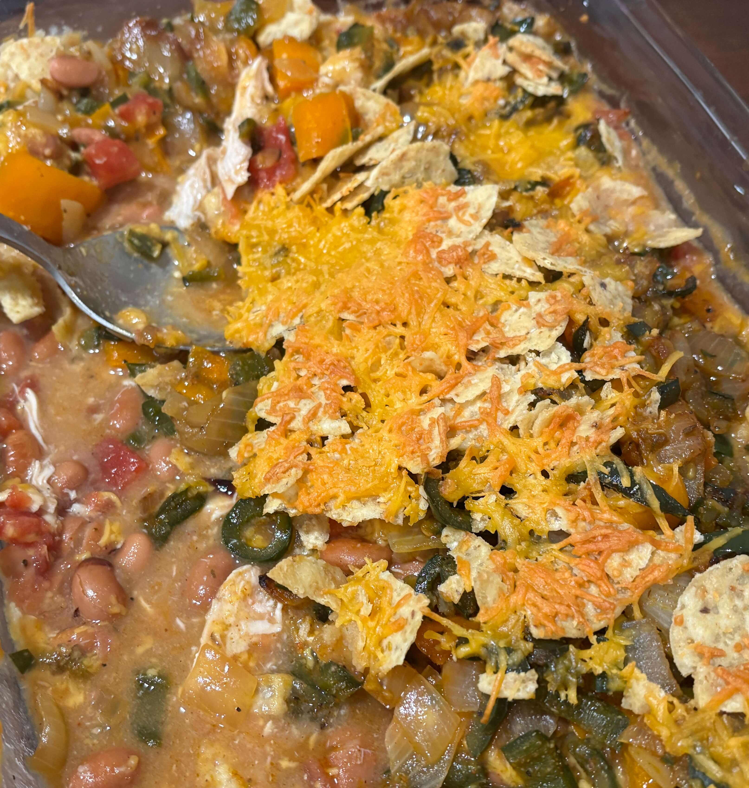

Home
Chicken Fajita Skillet Casserole

6 servings
Prep: 20 min, Cook: 25 minute
Ingredients
- 1 tablespoon olive oil
- 2 poblano peppers, thinly sliced
- 1 yellow or orange bell pepper, thinly sliced
- 1 white onion, thinly sliced
- 1 ½ teaspoons chili powder
- 1/2 teaspoon ground cumin
- 1/4 teaspoon garlic powder
- 3/4 teaspoon kosher salt
- 1/2 teaspoon freshly ground black pepper
- 2 ½ tablespoons butter
- 2 tablespoons all-purpose flour
- 1 (10 ounce) can diced tomatoes and green chiles
- 2 ½ cups shredded rotisserie chicken
- 1 (15 ounce) can pinto beans, drained and rinsed
- 2 cups sharp Cheddar cheese, divided
- 3 cups broken tortilla chips
- toppings, such as lettuce, cilantro, sour cream, salsa, and hot sauce (optional)
Steps
- Preheat the oven to 375 degrees F
- Heat oil in a large, oven-proof skillet over medium-high heat. Add peppers and onions and cook, undisturbed, 5 minutes or until browned. Add chili powder, cumin, garlic powder, salt and pepper and continue cooking until vegetables are soft, stirring often, 1 to 2 minutes. Remove vegetables from the pan and set aside.
- Add butter to the pan and melt over moderate heat. Whisk in flour and cook for 1 minute, stirring constantly. Add in tomatoes and broth and cook until thick and creamy, stirring constantly, about 3 minutes. Stir in chicken and beans. Top chicken mixture with 1 cup cheese. Spread reserved peppers and onions evenly over the cheese and top with chips and remaining cheese.
- Bake in the preheated oven until bubbly and lightly browned on top, about 15 minutes. Serve with desired toppings.